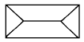
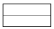
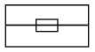
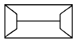
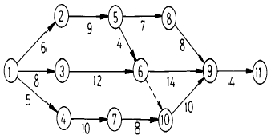
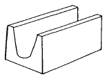

건축일반시공산업기사 (2004-08-08 기출문제)
1과목: 건축일반
1. 제도 용지의 크기 중 A1용지의 규격은?
- 841 mm × 1189 mm
- 594 mm × 841 mm
- 420 mm × 694 mm
- 297 mm × 594 mm
(정답률: 알수없음)

2. 다음 중 건축도면에 따른 축척의 표시가 옳지 않은 것은?
- 평면도: 1/100
- 입면도: 1/200
- 단면상세도: 1/20
- 투시도: 1/10
(정답률: 알수없음)
3. 다음 제도용구에 관한 설명 중 옳지 않은 것은?
- 디바이더 : 도면위의 선을 등분할 때 쓰인다.
- 컴퍼스 : 원 또는 원호를 그릴 때 쓰인다.
- 운형자 : 컴퍼스로 그리기 어려운 원호나 곡선을 그릴 때 쓰인다.
- 자유곡선자 : 작은 곡선 및 원을 그릴 때 쓰인다.
(정답률: 알수없음)
4. 다음 지붕평면도 중 합각지붕은?




(정답률: 100%)
5. 철근콘크리트 슬래브(slab)에서 가장 힘을 많이 받는 철근은?
- 단변방향의 인장철근
- 단변방향의 압축철근
- 장변방향의 인장철근
- 장변방향의 압축철근
(정답률: 84%)
6. 철골구조에서 지름이 16mm 인 리벳의 최소피치는?
- 32mm
- 40mm
- 48mm
- 64mm
(정답률: 64%)
7. 철근콘크리트구조에서 철근과 콘크리트의 부착력에 대한 설명 중 옳지 않은 것은?
- 압축강도가 큰 콘크리트일수록 부착력은 작아진다.
- 철근의 주장에 비례한다.
- 철근의 표면상태에 영향을 받는다.
- 철근의 단면모양에 영향을 받는다.
(정답률: 91%)
8. 목구조에서 기둥과 보사이에 버팀대를 사용할 경우 그 주요한 이유는?
- 기둥의 좌굴을 방지하기 위하여
- 기둥에 하중을 집중시키기 위하여
- 보의 단면을 작게 하기 위하여
- 절점을 강하게 하기 위하여
(정답률: 알수없음)
9. 부동침하의 원인이 아닌 것은?
- 건물이 이질(異質)지층에 걸쳐 있을 경우
- 부주의한 일부 증축을 하였을 경우
- 일부지정을 하였을 경우
- 독립기초를 하였을 경우
(정답률: 알수없음)
10. 다음 중 보강블록조에서의 테두리보 설치이유와 가장 관계가 먼 것은?
- 벽의 균열방지
- 세로철근의 정착
- 하중을 벽체에 균등분포
- 가로철근의 정착
(정답률: 80%)
11. 시멘트의 응결시간에 영향을 미치는 요소와 가장 관계가 먼 것은?
- 첨가석고의 질과 양
- 온도
- 시멘트 분말도
- 압축강도
(정답률: 100%)
12. 조기에 강도발휘가 높은 시멘트로 거푸집 존치기간을 줄일 수 있어 공사속도를 빨리 할 수 있으며 저온시의 공사에 사용할 수 있는 것은?
- 조강포오틀랜드시멘트
- 백색포틀랜드시멘트
- 중용열포오틀랜드시멘트
- 고로시멘트
(정답률: 100%)
13. 다음 중 콘크리트에 A.E제를 사용하는 주요한 목적은?
- 콘크리트의 비중을 가볍게 한다.
- 콘크리트의 워커빌리티 및 내구성을 향상시킨다.
- 콘크리트의 압축강도를 증가시킨다.
- 콘크리트의 부착력을 증가시킨다.
(정답률: 알수없음)
14. 다음의 공사 계약에 관한 설명 중 옳지 않은 것은?
- 지명경쟁입찰 - 기술능력이 거의 등등한 업자를 선정하는 것이 좋다.
- 공개경쟁입찰 - 공사가 조잡해질 우려가 있다.
- 특명입찰 - 공사비가 약간 높아질 우려가 있다.
- 일식도급 - 현장관리가 어렵다.
(정답률: 알수없음)
15. 내열성, 내한성이 우수한 수지로 -60 ~ 260℃의 범위에서는 안정하고 탄성을 가지며 내후성 및 내화학성 등이 아주 우수하여 접착제, 도료로서 주로 사용되는 열경화성수지는?
- 폴리에틸렌 수지
- 염화비닐 수지
- 아크릴 수지
- 실리콘 수지
(정답률: 84%)
16. 도면의 척도 종류에 속하지 않는 것은?
- 실척
- 축척
- 배척
- 도척
(정답률: 알수없음)
17. 다음 공정표에서 C P(critical path)는?

- 1 - 2 - 5 - 6 - 9 - 11
- 1 - 3 - 6 - 9 - 11
- 1 - 4 - 7 - 10 - 9 - 11
- 1 - 2 - 5 - 8 - 9 - 11
(정답률: 100%)
18. ㅅ자보와 평보의 맞춤에 쓰이는 보강 철물은?
- 꺽쇠
- 띠쇠
- 관통볼트
- 듀벨
(정답률: 알수없음)
19. 다음은 도면에 치수를 기입할 때에 주의할 점이다. 잘못된 설명은?
- 같은 도면에서 치수선의 양 끝 표시는 화살과 점을 혼용할 수 있다.
- 필요한 치수의 기재가 누락되는 일이 없도록 한다.
- 계산하지 않아도 알 수 있도록 치수를 기입한다.
- 치수의 기입은 원칙적으로 치수선에 따라 도면에 평행하게 쓴다.
(정답률: 93%)
20. 네트워크의 용어에 관한 설명 중 옳지 않은 것은?
- 더미(dummy) : 화살표형 네트워크에서 정상표현으로 할 수 없는 작업 상호 관계를 표시하는 화살표
- 가장 빠른 개시 시각(EST) : 작업을 시작하는 가장 빠른 시각
- 계산공기(T) : 미리 지정된 공기
- 플로트(float) : 작업의 여유시간
(정답률: 70%)
2과목: 조적, 미장, 타일시공 및 재료
21. 점토벽돌의 품질등급에서 1종의 압축강도 기준은?
- 100㎏f/cm2 이상
- 150㎏f/cm2 이상
- 210㎏f/cm2 이상
- 250㎏f/cm2 이상
(정답률: 100%)
22. 조적조에서 개구부 나비가 얼마 이상일 때 철근콘크리트 인방보를 사용해야 하는가?
- 1.2m
- 1.5m
- 1.8m
- 2.1m
(정답률: 90%)
23. 다음 중 한중콘크리트의 초기 동해방지를 위해 사용되는 것으로 콘크리트 응결 및 경화를 촉진시키는 촉진제는?
- 염화칼슘
- 석회
- 알루미늄 가루
- AE제
(정답률: 알수없음)
24. 그림과 같은 콘크리트블록의 명칭은?

- 창쌤 블록
- 인방 블록
- 창대 블록
- 장식 블록
(정답률: 알수없음)
25. 벽돌벽에 생기는 백화현상의 방지와 관계 없는 것은?
- 줄눈모르타르에 석회를 혼입한다.
- 양질의 벽돌을 사용한다.
- 줄눈사춤을 빈틈없이 다져넣어 빗물이 스며드는 것을 방지한다.
- 파라핀 도료를 발라 염류가 나오는 것을 막는다.
(정답률: 100%)
26. 벽돌공사에 관한 기술 중 옳지 않은 것은?
- 창문틀은 원칙적으로 나중세우기로 한다.
- 창문틀을 먼저세우기 할 경우에는 그 밑까지 벽돌을 쌓고 24시간 경과한 다음에 세운다.
- 창대벽돌은 그 윗면을 15° 정도의 경사로 옆세워 쌓는다.
- 아치쌓기는 아치의 어깨에서부터 좌우 대칭형으로 균등하게 쌓는다.
(정답률: 알수없음)
27. 한 켜는 마구리쌓기, 다음 켜는 길이쌓기로 하고 모서리나 끝에는 반절이나 이오토막을 사용하는 벽돌쌓기법은?
- 영국식 쌓기
- 화란식 쌓기
- 프랑스식 쌓기
- 미국식 쌓기
(정답률: 93%)
28. 내력벽을 블록으로 쌓을 경우 내력벽의 두께는 당해 벽높이의 얼마 이상으로 하는가?
- 1/16 이상
- 1/18 이상
- 1/20 이상
- 1/22 이상
(정답률: 77%)
29. 하루 벽돌의 쌓는 높이는 최대 얼마 이하로 하는가?
- 1.0m
- 1.2m
- 1.5m
- 1.8m
(정답률: 91%)
30. 단순조적 블록 공사에 관한 기술 중 옳지 않은 것은?
- 살두께가 두꺼운 쪽을 아래로 향하게 쌓는다.
- 쌓기전에 모르타르 접합부에 적당히 물을 축인다.
- 줄눈나비는 가로, 세로 각각 10mm를 표준으로 한다.
- 세로줄눈은 막힌줄눈으로 한다.
(정답률: 85%)
31. 조적조에 있어서 통줄눈을 피하고 막힌줄눈을 사용하는 주된 이유는?
- 외관을 좋게 하기 위해서
- 시공을 편리하게 하기 위해서
- 응력을 분산시키기 위해서
- 부착력을 좋게 하기 위해서
(정답률: 92%)
32. 벽돌내쌓기에서 내미는 정도의 한도는?
- 1.0B
- 1.5B
- 2.0B
- 2.5B
(정답률: 알수없음)
33. 콘크리트블록조에서 테두리보의 춤은 벽두께의 몇 배 이상이어야 하는가?
- 1.0배 이상
- 1.5배 이상
- 2.0배 이상
- 2.5배 이상
(정답률: 75%)
34. 표준형벽돌로 두께 1.5B 쌓기할 때의 벽두께는? (공간쌓기 아님)
- 230 mm
- 280 mm
- 290 mm
- 380 mm
(정답률: 79%)
35. 벽두께 1.0B, 벽높이 2.4m, 벽길이 5m 일때 표준형 벽돌을 사용한다면 필요한 벽돌 수량으로 가장 적당한 것은? (단, 줄눈 나비 10mm, 정미량 기준)
- 1,500장
- 1,530장
- 1,660장
- 1,790장
(정답률: 82%)
36. 벽돌벽을 두께 1.0B로 쌓을 때 표준형벽돌 1000장당 소요되는 모르타르 양은? (단, 시멘트:모래 = 1:3)
- 0.27 m3
- 0.33 m3
- 0.47 m3
- 0.52 m3
(정답률: 100%)
37. 벽돌조 공간쌓기에서 연결재의 최대 수직거리는 얼마 이하로 하는가?
- 25㎝
- 40㎝
- 50㎝
- 60㎝
(정답률: 75%)
38. 조적조에서는 일반적으로 통줄눈을 피하는데 오히려 통줄눈으로 하여야 하는 구조는?
- 돌구조
- 벽돌구조
- 조적식블록조
- 보강블록조
(정답률: 91%)
39. 한 켜는 길이쌓기로 하고 다음 켜는 마구리쌓기로 하며 모서리 또는 끝에서 칠오토막을 사용하는 벽돌쌓기법은?
- 영국식 쌓기
- 네덜란드식 쌓기
- 프랑스식 쌓기
- 미국식 쌓기
(정답률: 50%)
40. 벽돌 바닥 깔기에서 표준형 벽돌을 사용하여 평깔기를 할 때 바닥 넓이 1m2당 필요한 벽돌의 정미수량은?
- 50장
- 60장
- 70장
- 80장
(정답률: 88%)
3과목: 안전관리
41. 석재에 대한 다음 설명 중 옳지 않은 것은?
- 대리석은 견고하고 색채와 반점이 아름답고 갈면 광택이 나므로 실내장식재, 조각재로 사용된다.
- 안산암은 성분이 복잡하므로 성분에 따라 색과 석질이 다르다.
- 응회암은 화산재가 응고한 것으로 다공질 석재이다.
- 화강암은 견고하나 대형재를 얻기 어려워 구조재로 사용하기 곤란하다.
(정답률: 86%)
42. KS에 규정된 C종 속빈 콘크리트블록의 전단면적에 대한 압축강도는?
- 82 kgf/cm2 이상
- 41 kgf/cm2 이상
- 61 kgf/cm2 이상
- 95 kgf/cm2 이상
(정답률: 알수없음)
43. 창대 벽돌의 위끝은 창대 밑에 어느 정도 들어가 물리게 하는가?
- 1.0cm
- 1.2cm
- 1.5cm
- 2.5cm
(정답률: 86%)
44. 쌓아올리는 포대수를 13포로 할 때, 시멘트 400포대를 쌓을 수 있는 시멘트창고의 소요 면적으로 적당한 것은? (통로를 설치할 경우)
- 15 m2
- 12.3m2
- 10.2m2
- 9.8m2
(정답률: 알수없음)
45. 조적조 내력벽으로 둘러싸인 부분의 바닥면적은 최대 얼말 이하로 하는가?
- 60 m2
- 80 m2
- 100 m2
- 120 m2
(정답률: 67%)
46. 벽돌조 쌓기의 치장줄눈용 모르타르 표준용적배합비는? (결합재:세골재)
- 1 : 0.5 ~ 1.5
- 1 : 2.0 ~ 2.5
- 1 : 2.5 ~ 3.0
- 1 : 3.0 ~ 3.5
(정답률: 55%)
47. 벽돌조의 개구부와 개구부 사이의 수평거리는 벽 두께의 최소 몇 배 이상으로 하는가?
- 1.0
- 1.5
- 2.0
- 2.5
(정답률: 94%)
48. 벽돌조의 내력벽 길이는 최대 얼마 이하로 해야 하는가?
- 12m
- 10m
- 9m
- 8m
(정답률: 64%)
49. 뒷면은 영식쌓기 또는 화란식쌓기로 하고 표면에는 치장 벽돌을 써서 5~6켜는 길이쌓기로 하며, 다음 1켜는 마구리쌓기로 하여 뒷벽돌에 물려서 쌓는 벽돌쌓기법은?
- 영국식쌓기
- 미국식쌓기
- 네덜란드식쌓기
- 프랑스식쌓기
(정답률: 86%)
50. 쌤돌에 대한 설명으로 옳은 것은?
- 석조의 개구부 옆 부분에 대는 돌이다
- 석조 개구부 밑부분에 대는 돌이다
- 석조 개구부 상부에 대는 돌이다
- 석조 개구부 윗부분에 차양과 같은 돌림띠이다
(정답률: 80%)
51. A급화재(보통화재)가 발생하여 확대되었다면 소화방법으로 가장 많이 사용하는 것은?
- 포말소화기를 사용하는 것이 좋다.
- 강화액소화기를 사용하는 것이 좋다.
- 분말소화기를 사용하는 것이 좋다.
- 물을 사용하는 것이 좋다.
(정답률: 알수없음)
52. 다음 기술 중 틀린 것은?
- 감각기관에 대한 자극이 한꺼번에 많이 나타날때에는 거부 현상이 일어난다.
- 인간의 주의는 일정대상에 오랫동안 집중하거나 계속 할 수 있다.
- 대뇌의 기능은 주· 야간에 따라 각각 다르다.
- 인간의 능력은 개인차에 따라 다르다.
(정답률: 100%)
53. 평균 근로자가 100명이 있는 직장에서 1년동안에 8명의 재해자를 냈을때 천인율은?
- 0.8
- 8
- 80
- 800
(정답률: 알수없음)
54. 1년중 재해자 수가 가장 많이 발생하는 달은?
- 2 - 3월
- 4 - 5월
- 5 - 6월
- 7 - 8월
(정답률: 80%)
55. 인간의 생리적 욕구 중 통제가 가장 어려운 것은?
- 안전욕구
- 해갈욕구
- 배설욕구
- 수면욕구
(정답률: 알수없음)
56. 작업전, 작업중, 작업종료후 하는 안전점검은?
- 정기 점검
- 일상 점검
- 수시 점검
- 임시 점검
(정답률: 73%)
57. 알고는 있으나 그대로 실천하지 않는 사람을 위해 알고 있는대로 하도록 하는 교육은?
- 안전지식교육
- 안전기능교육
- 안전태도교육
- 안전관리교육
(정답률: 알수없음)
58. 컴퓨터(Computer) 등 값이 비싼 전기기계, 기구 등의 소화에 적당한 소화기는?
- 물탱크식 소화기
- 산· 알칼리 소화기
- 할론(halon)가스 소화기
- 이산화탄소 소화기
(정답률: 100%)
59. 안전조직의 3가지 유형에 해당되지 않은것은?
- 라인식 조직
- 스태프식 조직
- 리더식 조직
- 라인스태프식 조직
(정답률: 알수없음)
60. 인간-기계 통합시스템의 인간 또는 기계에 의해서 수행되는 기본 기능의 유형으로 옳은 것은?
- 감지 → 정보저장 → 정보처리 및 결정 → 행동
- 감지 → 정보처리 및 결정 → 정보저장 → 행동
- 정보저장 → 감지 → 정보처리 및 결정 → 행동
- 정보저장 → 정보처리 및 결정 → 감지 → 행동
(정답률: 알수없음)